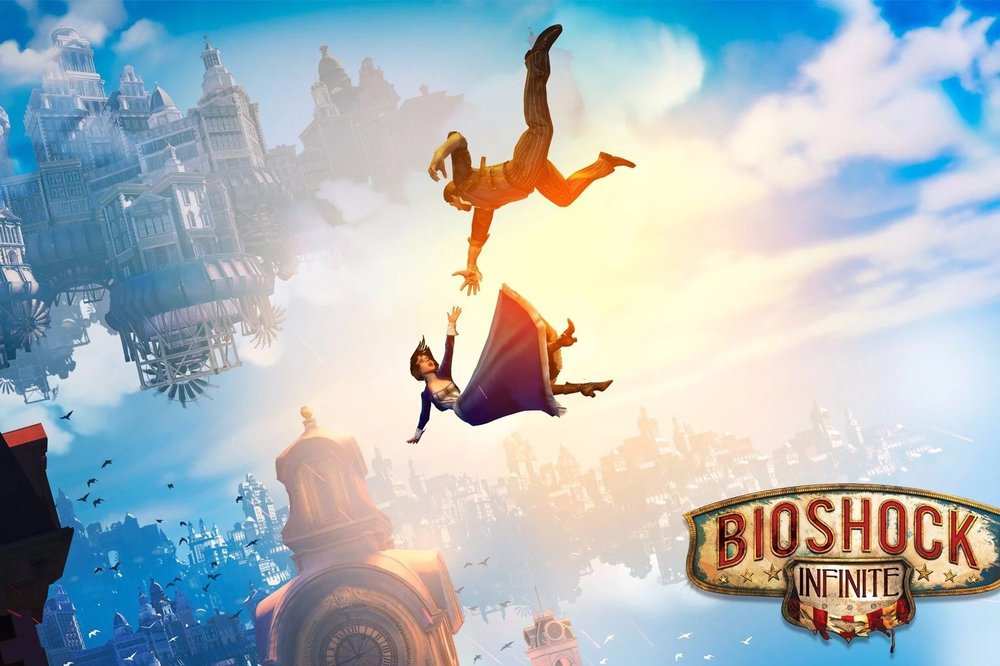

The Legend of Zelda: Breath of the Wild
Un mundo abierto lleno de secretos donde puedes ir a donde quieras desde el primer minuto. Uno de los mejores juegos de aventuras que he jugado.

Opiniones sobre mis videojuegos favoritos
Un mundo abierto lleno de secretos donde puedes ir a donde quieras desde el primer minuto. Uno de los mejores juegos de aventuras que he jugado.
Columbia es una ciudad que flota entre las nubes y es una de las ambientaciones más bonitas de los videojuegos. Su historia, sus giros y la relación entre Booker y Elizabeth hacen que sea un juego inolvidable.

Un juego de exploración con un arte precioso y una música increíble. Es difícil, pero cada jefe que derrotas se siente como un gran logro.